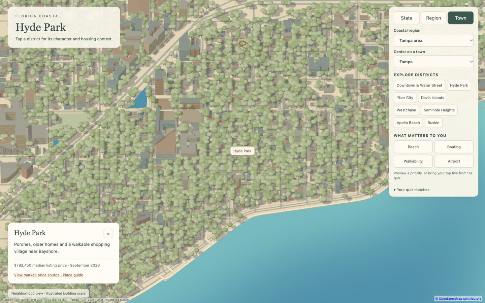
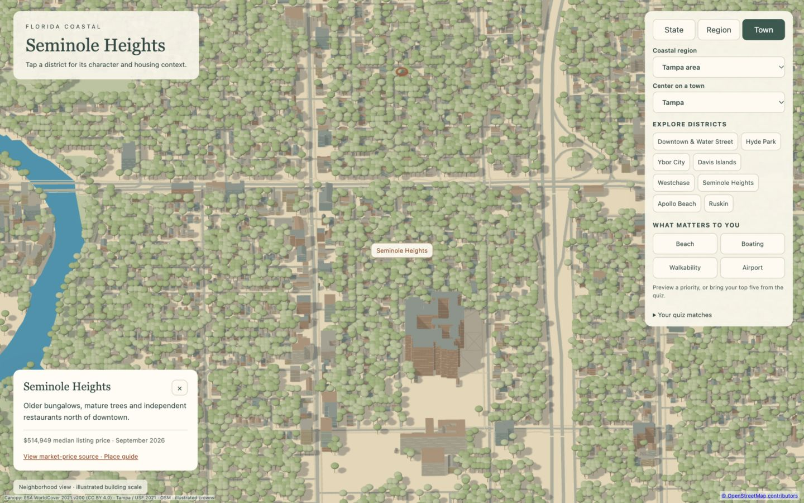
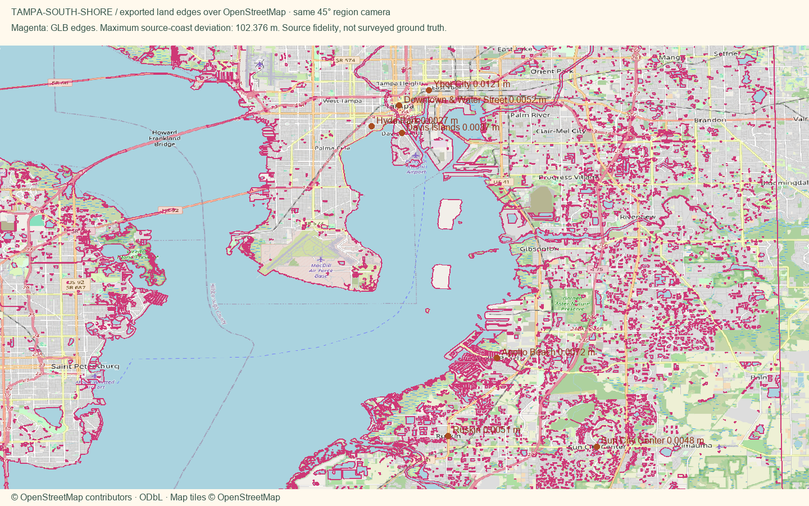

Open atlas · Accuracy CSV · Price sources · Validation
2.85 MB region geometry · 102.38 m maximum coastline-to-source difference · 0.0152 m maximum district-anchor serialization difference.
These are OpenStreetMap source-alignment checks, not a survey. Physical-phone loading time remains unverified.
Missing-height houses use one or two real stories before 3× display scaling. House silhouettes retain pitched roofs and use a stricter 1.2× footprint-width cap. Original OSM heights remain in the inventory. Palms require source evidence.
Broad oak trees thinned by approximately 20% in both neighborhoods. The 55% crown-coverage audit below describes the prior, unthinned source set; current displayed coverage is lower. Measured on a 10m grid over land in a 1.7km neighborhood window; this is illustration coverage, not a surveyed tree-canopy percentage. Sourced trunk placement is unchanged.
Hyde Park Village uses five mapped shopping footprints with a low two-storey recipe. Bayshore uses mapped waterfront footways, an exaggerated 10m display width, and a waterside balustrade. City neighborhood reference · Bayshore reference · Mapped promenade paths · Canopy audit


